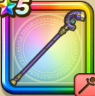

いかずちのつえ
攻略班 8.5点 / ザメハベギラマイオナズンイオマータ※錬成で強化可能
くわしい特徴
【レベル別習得スキル】 Lv1【魔法戦士】すばやさ+7 Lv1【賢者】さいだいMP+5 Lv1ザメハ（消費MP：9）仲間全員のねむりをなおす Lv10ベギラマ（消費MP：14）はげしい炎で敵全体にギラ属性の呪文小ダメージを与える Lv15破壊神シドーへのダメージ+10% Lv20イオ属性呪文ダメージ+10% Lv25イオナズン（消費MP：38）敵全体にイオ属性の呪文大ダメージを与える Lv30イオマータ（消費MP：33）敵1体にイオ属性の呪文少ダメージを4回与える(特大ダメージ相当) Lv33悪魔系へのダメージ+5% Lv36ゾンビ系へのダメージ+5% Lv40守備減成功率+10% Lv50こうげき魔力+12錬成スキル改1イオナズン・滅（消費MP：49）敵全体にイオ属性の呪文特大ダメージを与え、HP15%以下の敵(一部を除く)を消滅させる改2イオマータ改（消費MP：60）敵1体にイオ属性の呪文大ダメージを4回(絶大ダメージ相当)与え、4回まれに聖印を付与する改3悪魔系へのダメージ+10%改4錬成ぶき特別演出解放・メガモン討伐結果発表時に特別演出が追加・武器の見た目に特別なエフェクトが追加 【限界突破スキル】 1凸じゅもんダメージ+5% 2凸じゅもんダメージ+5% 3凸じゅもんダメージ+5% 4凸じゅもんダメージ+5%